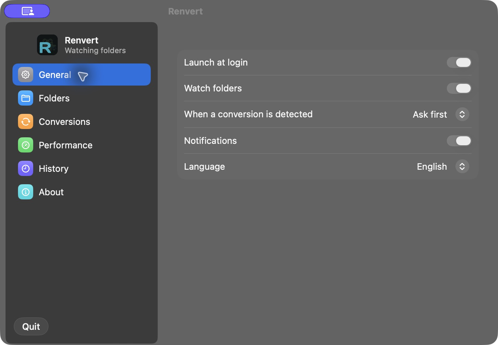
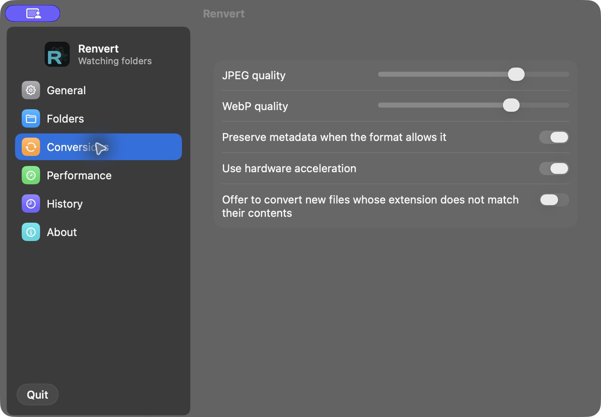
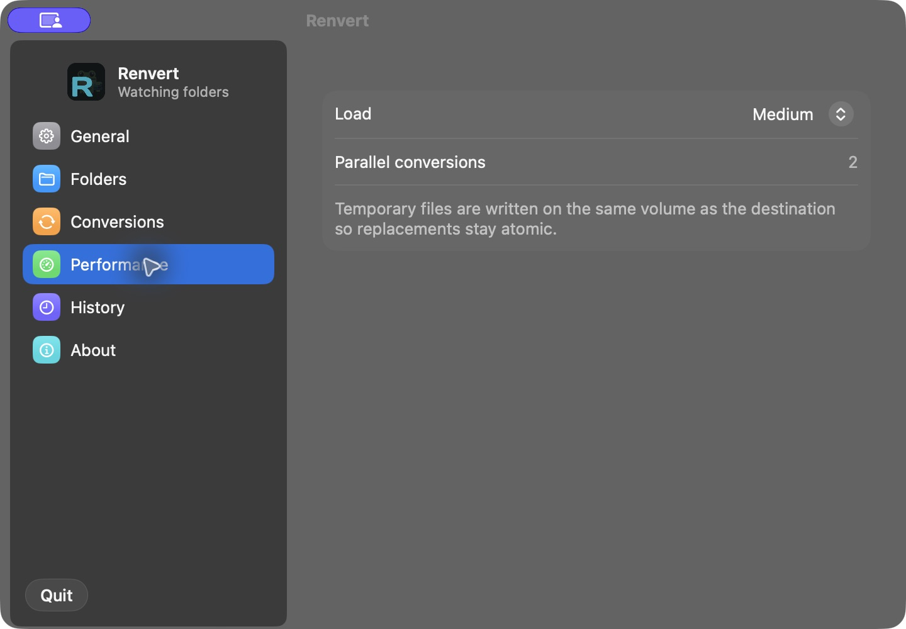
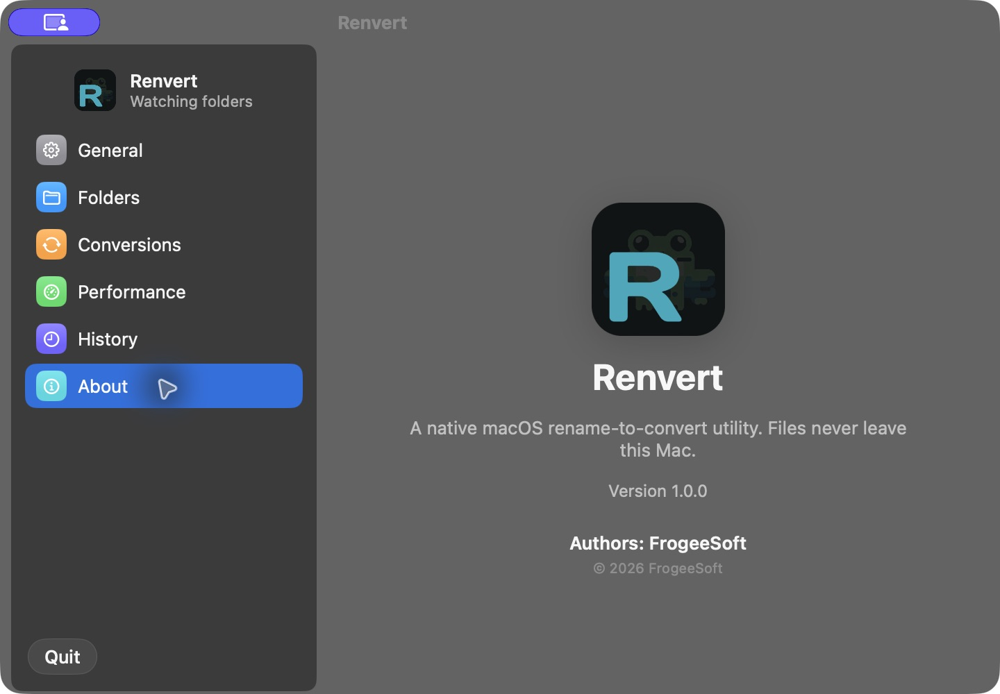

Переименуй.Готово.
Renvert конвертирует файлы на Mac, когда вы меняете расширение в Finder.
Скачать для macOSБесплатно. Всё происходит на вашем компьютере.

Попробуйте имя
Выберите исходный файл и поменяйте расширение. Короткие пометки вроде +q80 задают параметры конвертации.
Возьмите файл
Допишите новое расширение и нажмите Enter, как в Finder
Это фото с iPhone. Попробуйте назвать его отпуск.jpg.
Это демонстрация команды в браузере. Файлы сюда загружать не нужно; конвертацию выполняет установленный Renvert.
Начните в Finder
Renvert работает из строки меню. Обычное переименование запускает конвертацию, а настройки определяют, когда спрашивать разрешение.
- Запустите Renvert
Программа появится в строке меню. Отдельной иконки в Dock нет.
- Выберите папки
Начните с Рабочего стола, Загрузок или Документов. Другие папки можно добавить в настройках.
- Смените расширение
В Finder переименуйте
photo.heicвphoto.jpg. Renvert определит исходный формат по содержимому файла. - Подтвердите или доверьте
В режиме «Сначала спросить» подтвердите действие в меню. В автоматическом режиме программа дождётся, пока файл перестанет меняться.
- Верните оригинал
Если результат не подошёл, отмените конвертацию из строки меню или в разделе «История».
Ваши настройки
Четыре экрана установленной программы. Выберите раздел и откройте снимок, чтобы увидеть интерфейс в полном размере.
Выберите режим конвертации, включите уведомления и запуск вместе с системой. Отслеживание папок можно приостановить.
Настройки → Основные
Задайте качество JPEG и WebP по умолчанию. Отдельно настраиваются сохранение метаданных и аппаратное ускорение.
Настройки → Конвертация
Выберите уровень нагрузки на Mac. На снимке средний режим: две параллельные конвертации.
Настройки → Производительность
Нативная программа на Swift. На снимках версия 1.0.0 с английским интерфейсом; в настройках также доступен русский язык.
Настройки → О программеФорматы
Фото, документы, звук и видео. Это примеры работающих направлений конвертации, а не обещание поддержать любое расширение.
- HEICJPEGФото с iPhone для любых сайтов и программ
- PNGWebP, JPEGЛёгкие картинки для веба
- MOVMP4Записи экрана и видео с камеры
- WAVM4A, MP3Для MP3 требуется ffmpeg в сборке или системе.
- DOCXPDFПереносится текст и структура абзацев. Сложная вёрстка может отличаться.
- PDFPNGСтраницы как картинки
- XLSXCSVТаблица для скриптов и баз данных
- JSONYAMLКонфиги в удобном виде
- ПапкаZIPАрхив одним переименованием
Для WebP может потребоваться ImageMagick. Все направления и ограничения перечислены в таблице возможностей.
| Новое имя | Что получится |
|---|---|
photo.jpg | Фото HEIC станет JPEG. Формат определяется по содержимому, а не по старому расширению. |
photo+q80.jpg | JPEG с качеством 80%. |
photo+min.png | Самый маленький файл, который ещё хорошо выглядит. |
clip+mute.mp4 | Видео без звуковой дорожки. |
book+page2-5.png | Только страницы со 2-й по 5-ю из PDF. |
photo.png,webp | Сразу два файла: PNG и WebP. |
Photos.folder,zip | Папка превратится в ZIP-архив. |
photo.jpg! | Конвертировать сразу, даже если включён режим «Сначала спросить». |
Перед запуском
Что происходит с файлами и какие разрешения нужны программе.
Куда отправляются файлы?
Вся конвертация идёт локально. Ничего не загружается в облако.
Можно вернуть исходный файл?
Перед конвертацией Renvert сохраняет оригинал, а журнал сбоев не даст потерять файл при ошибке.
Нужен полный доступ к диску?
Для стандартных папок Рабочий стол, Загрузки и Документы достаточно доступа к выбранным папкам. Полный доступ к диску для них не нужен.
Подойдёт для моего Mac?
Нужна macOS 14 или новее. Universal Binary работает на Apple Silicon и Intel. Интерфейс доступен на русском и английском.
Почему macOS предупреждает при запуске?
Сборка подписана ad-hoc и не нотарифицирована Apple. При первом запуске macOS может заблокировать открытие. Информация о сборке и запуске есть в README проекта.
Как Renvert связан с Consul?
Renvert независимо реализует идею переименования для конвертации. В проекте нет кода, ресурсов или проверок лицензий Consul. Поддержка форматов описана в таблице возможностей Renvert.
Бесплатно. Исходный код на GitHub, программа написана на Swift.
Собрать самостоятельно: ./scripts/build.sh или Xcode. Открыть репозиторий